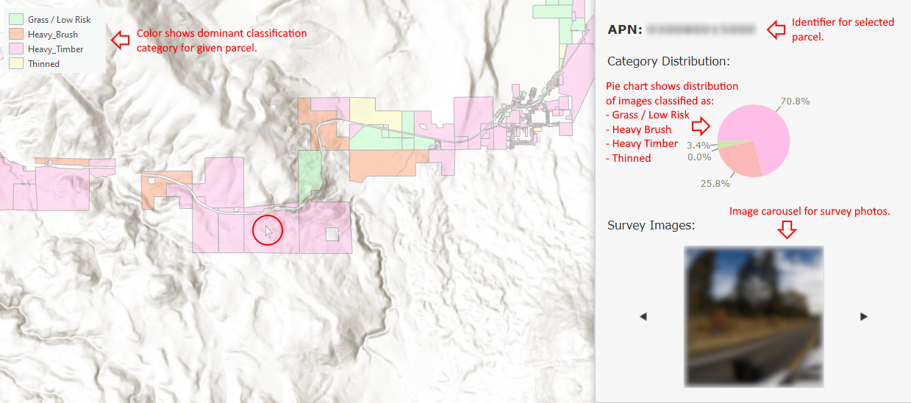
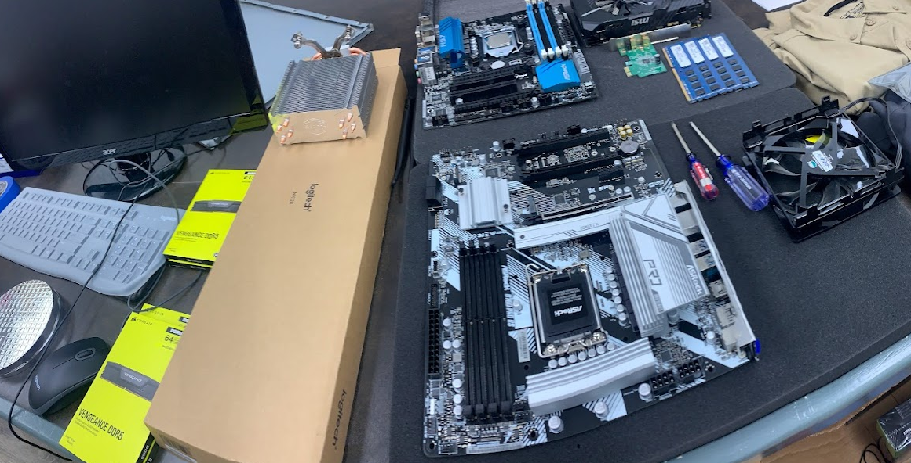
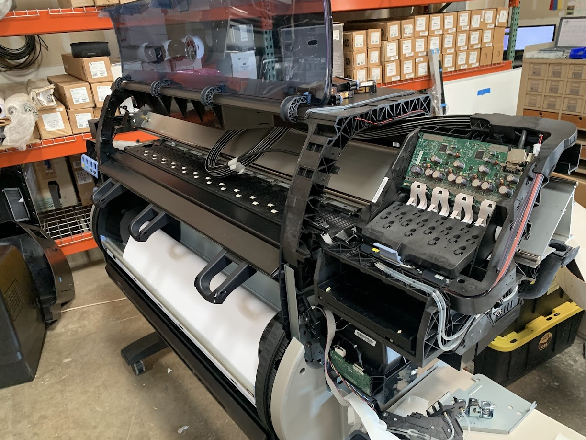

September 2025 - Present
Edited and validated 3DEP hydrography datasets, refining culvert placement and network connectivity.
Embedded Tutor at Chico State Math Department

August 2025 - Present
Assisted with instruction for an introductory statistics course; graded assignments and provided student support during weekly office hours.

August 2022 - May 2025
-
Developed computer vision model in Python to detect overgrown parcels based on roadside imagery,
supporting evacuation planning and vegetation management in wildfire-prone areas of Northern
California.

- Photos are collected from cameras mounted to the sides of a car.
- Each photo is classified using PyTorch.
- Photos are assigned to parcels.
- Supports vegetation management and community outreach for wildfire preparedness.
-
Developed an AWS-based pipeline for retrieving USGS LiDAR datasets and producing rasterized inputs for wildfire modeling.


- R script automates the process of calculating, resampling and assembling rasters.
- Inputs: LiDAR point cloud.
Outputs: Elevation, Slope, Aspect, Canopy Cover, Canopy Height, Crown Base Height, Crown Bulk Density.
-
Developed convolutional neural network in Python to map aerial imagery (PyTorch, Raster Vision, Faster R-CNN).
-
Identified hazardous evacuation routes in Tehama County based on fieldwork and GIS analysis.

-
Earned Firefighter II certification and participated in prescribed burns.


Prescribed burn in Upper Bidwell Park of Chico, CA, 2023.
- Deployed mobile GIS workstations to wildfire incidents across Northern California, including the 2023 South Fork Complex, 2024 Aero Fire, 2024 Shelly Fire, and 2024 Park Fire.

Day 1 of the 2024 Shelly Fire.
- Managed software and hardware for office IT and mobile GIS workstations.


- DCR Website
Skills: Python, AWS, R, Systems Admin, QGIS, ArcGIS

June 2022 - August 2022
- Developed script to analyze Google BigQuery storage and proposed solution to generate savings of $120k/year.
- (UMG has implemented this project throughout 2023).
- Learned SQL and applied skills for analytics on Big Data.
- Developed data pipeline for UK top artists chart under guidance of senior developer.
Skills: Python, SQL, Google Cloud Platform


Two slides from optimization project presentation.
Teaching Assistant at Computer Science Department of Pomona College

January 2022 - May 2022
- Taught Python to undergrads in Intro CS.
- Ran 2 hour weekly mentor sessions, led 3 hour weekly class labs, and graded assignments.
Skills: Python


Lab where sessions took place [left] and example of coursework code [right].
Student Partner at Quantitative Skills Center of Pomona College
January 2022 - May 2022
- Hosted drop-in tutor sessions.
- Intro CS, Discrete Math and Data Structures (Python, Coq, Java).

Example of coursework that I tutored (inductive proof in COQ).

August 2021 - May 2022
- Assisted development of Mappy, a Rust program which interprets pixel data and creates maps of emulated Nintendo NES games.
- Published paper on Mappy to AIIDE 2021 conference (Click here to view the paper!)
- FAIM Site
Skills: Rust
Camp Counselor at Bar 717 Ranch

Summer 2021 and Summer 2025
- Led groups of 6 campers over 2 week sessions (ages 8-15).
- Guided groups through activities such as hikes, guitar lessons, overnight camping trips.
- Acquired lifeguard/CPR and Wilderness First Aid certifications.
Skills: Lifeguarding, Wilderness First Aid, Backpacking


Student Assistant at Claremont McKenna Children's School

January 2020 - March 2020
- Employed to supervise groups of 20 children (ages 3-4) and inspire learning.
Awards:
🌟Ted Gleason Award
- "An award established by the family of Edward Rowse Gleason '70 is given annually to a man or woman student who has made a warm-hearted contribution to the community life of the College through such traits as sympathy, friendliness, good cheer, generosity, and, particularly, perseverance and courage."
- Presented at Pomona College Graduation 2023.
🌟 Best Paper Award - October 2021
- AIIDE, conference on Artificial Intelligence and Interactive Digital Entertainment
- Awarded to paper on Mappy, the program to which I contributed (see projects tab).
🌟Esri Developer Summit - March 2023
- Selected as a student assistant at the 2023 Esri Developer Summit
in Palm Springs, CA.
🌟 Valedictorian
- Paradise High School class of 2019